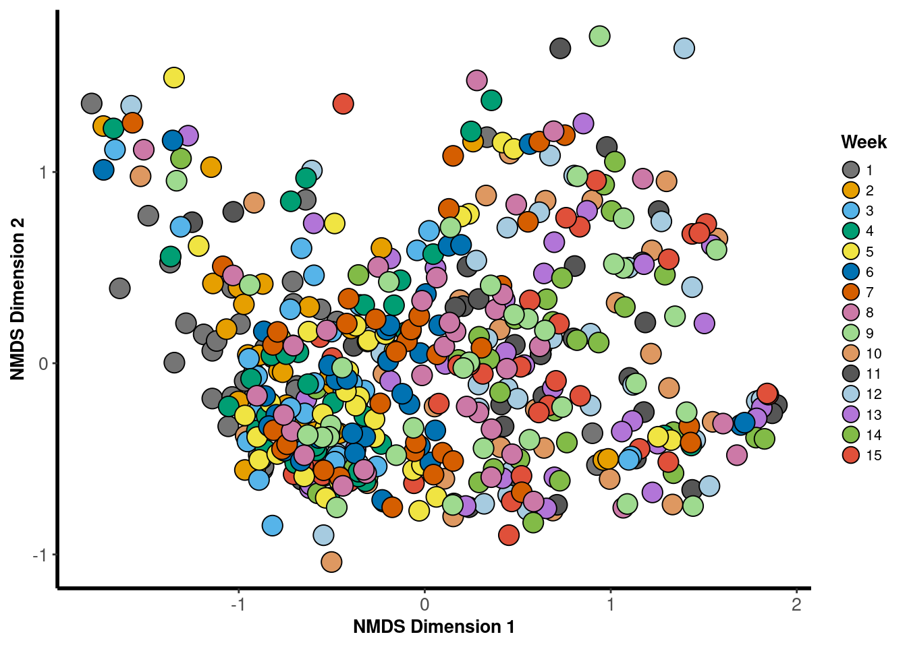
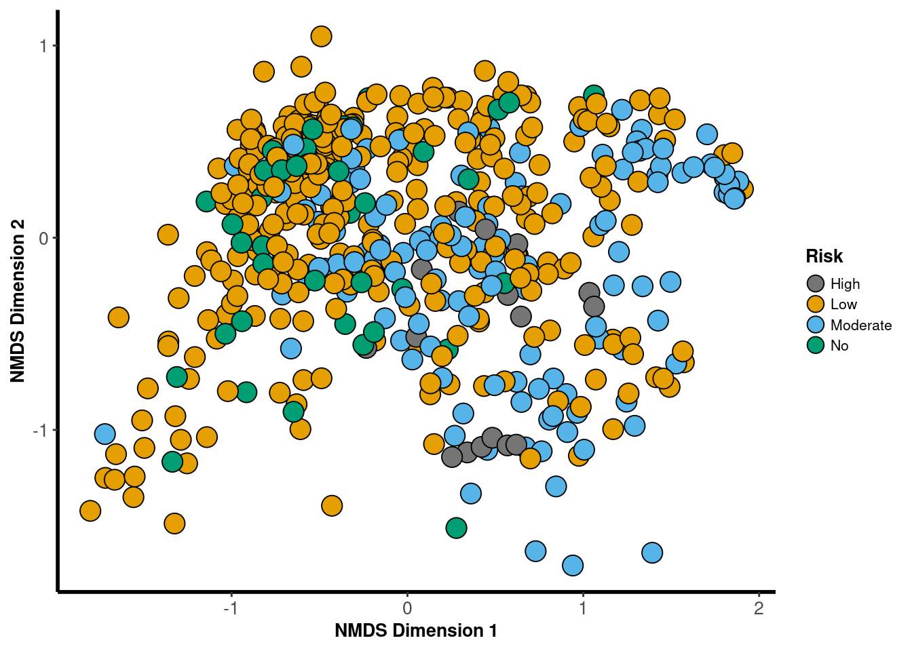
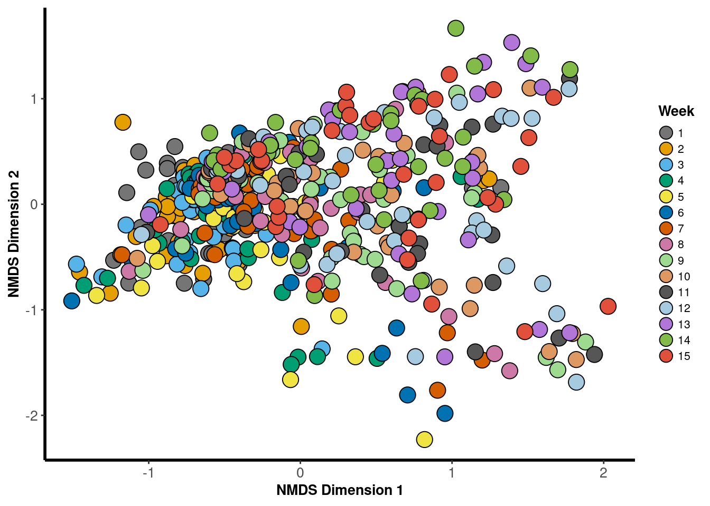
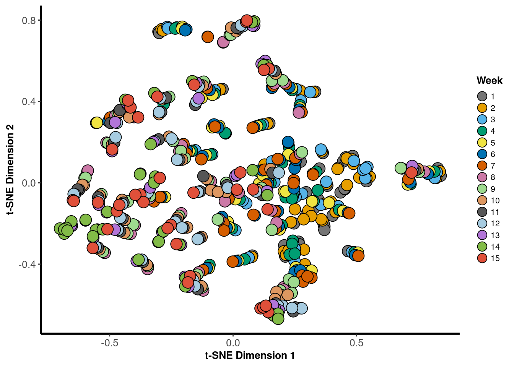

Sample Ordination
2018
Lake
PCoA
phylosmith::pcoa_phyloseq(phylosmith::taxa_filter(lake_po, treatment = "Year", subset = "2018"), "Location", circle = FALSE)NMDS
nmds <- phylosmith::nmds_phyloseq(phylosmith::taxa_filter(lake_po, treatment = "Year", subset = "2018"), "Location", circle = FALSE)## Run 0 stress 0.151933
## Run 1 stress 0.1534356
## Run 2 stress 0.154466
## Run 3 stress 0.1533509
## Run 4 stress 0.1534726
## Run 5 stress 0.1533895
## Run 6 stress 0.1533043
## Run 7 stress 0.1536788
## Run 8 stress 0.1534169
## Run 9 stress 0.1525487
## Run 10 stress 0.1530491
## Run 11 stress 0.1525312
## Run 12 stress 0.1526407
## Run 13 stress 0.1524548
## Run 14 stress 0.1538253
## Run 15 stress 0.1528416
## Run 16 stress 0.1535825
## Run 17 stress 0.1568225
## Run 18 stress 0.1525044
## Run 19 stress 0.1542944
## Run 20 stress 0.1524334
## Run 21 stress 0.1530431
## Run 22 stress 0.1530742
## Run 23 stress 0.1526105
## Run 24 stress 0.1539396
## Run 25 stress 0.1528012
## Run 26 stress 0.1525962
## Run 27 stress 0.1525234
## Run 28 stress 0.1524995
## Run 29 stress 0.1564351
## Run 30 stress 0.1546273
## Run 31 stress 0.1549789
## Run 32 stress 0.1535228
## Run 33 stress 0.153367
## Run 34 stress 0.1535138
## Run 35 stress 0.1521801
## ... Procrustes: rmse 0.01015467 max resid 0.08875843
## Run 36 stress 0.1539387
## Run 37 stress 0.1537426
## Run 38 stress 0.1524627
## Run 39 stress 0.1523145
## ... Procrustes: rmse 0.01466971 max resid 0.1046717
## Run 40 stress 0.1546273
## Run 41 stress 0.1523321
## ... Procrustes: rmse 0.02279331 max resid 0.1163652
## Run 42 stress 0.1527559
## Run 43 stress 0.1537227
## Run 44 stress 0.1535727
## Run 45 stress 0.1532843
## Run 46 stress 0.1539548
## Run 47 stress 0.1526273
## Run 48 stress 0.1524385
## Run 49 stress 0.1524555
## Run 50 stress 0.1532684
## Run 51 stress 0.1536997
## Run 52 stress 0.1525111
## Run 53 stress 0.1522484
## ... Procrustes: rmse 0.00932941 max resid 0.07828487
## Run 54 stress 0.1530992
## Run 55 stress 0.1534408
## Run 56 stress 0.1542449
## Run 57 stress 0.1545536
## Run 58 stress 0.1532509
## Run 59 stress 0.1532928
## Run 60 stress 0.1524185
## ... Procrustes: rmse 0.01618282 max resid 0.1039057
## Run 61 stress 0.1525069
## Run 62 stress 0.1544331
## Run 63 stress 0.1534955
## Run 64 stress 0.1530244
## Run 65 stress 0.1527714
## Run 66 stress 0.1523565
## ... Procrustes: rmse 0.02298685 max resid 0.1173504
## Run 67 stress 0.1525863
## Run 68 stress 0.1526036
## Run 69 stress 0.1524693
## Run 70 stress 0.1536621
## Run 71 stress 0.1529309
## Run 72 stress 0.1533214
## Run 73 stress 0.1523525
## ... Procrustes: rmse 0.02300402 max resid 0.1167006
## Run 74 stress 0.1549941
## Run 75 stress 0.1541745
## Run 76 stress 0.1538195
## Run 77 stress 0.1538023
## Run 78 stress 0.1524696
## Run 79 stress 0.1528372
## Run 80 stress 0.1525862
## Run 81 stress 0.1534053
## Run 82 stress 0.1524082
## ... Procrustes: rmse 0.01434446 max resid 0.07659997
## Run 83 stress 0.1523111
## ... Procrustes: rmse 0.0232133 max resid 0.1180655
## Run 84 stress 0.1527019
## Run 85 stress 0.1537149
## Run 86 stress 0.1536919
## Run 87 stress 0.152808
## Run 88 stress 0.1538181
## Run 89 stress 0.1536614
## Run 90 stress 0.1538686
## Run 91 stress 0.1528119
## Run 92 stress 0.1543375
## Run 93 stress 0.1540655
## Run 94 stress 0.1561206
## Run 95 stress 0.1524347
## Run 96 stress 0.1531154
## Run 97 stress 0.1530807
## Run 98 stress 0.1525409
## Run 99 stress 0.1523207
## ... Procrustes: rmse 0.01530068 max resid 0.1066857
## Run 100 stress 0.1529975
## *** No convergence -- monoMDS stopping criteria:
## 49: no. of iterations >= maxit
## 46: stress ratio > sratmax
## 5: scale factor of the gradient < sfgrminnmds
tSNE
phylosmith::tsne_phyloseq(phylosmith::taxa_filter(lake_po, treatment = "Year", subset = "2018"), "Location", circle = FALSE)
Week
PCoA
phylosmith::pcoa_phyloseq(phylosmith::taxa_filter(lake_po, treatment = "Year", subset = "2018"), "Week", circle = FALSE)
NMDS
nmds <- phylosmith::nmds_phyloseq(phylosmith::taxa_filter(lake_po, treatment = "Year", subset = "2018"), "Week", circle = FALSE)## Run 0 stress 0.1519324
## Run 1 stress 0.1540934
## Run 2 stress 0.152308
## ... Procrustes: rmse 0.02280497 max resid 0.1165151
## Run 3 stress 0.152888
## Run 4 stress 0.1532488
## Run 5 stress 0.1538958
## Run 6 stress 0.1526015
## Run 7 stress 0.152483
## Run 8 stress 0.1537288
## Run 9 stress 0.1530646
## Run 10 stress 0.1526049
## Run 11 stress 0.1529314
## Run 12 stress 0.1532352
## Run 13 stress 0.153233
## Run 14 stress 0.1522567
## ... Procrustes: rmse 0.01564318 max resid 0.1048653
## Run 15 stress 0.1533487
## Run 16 stress 0.1540859
## Run 17 stress 0.1525519
## Run 18 stress 0.1524157
## ... Procrustes: rmse 0.0240905 max resid 0.1191676
## Run 19 stress 0.1530771
## Run 20 stress 0.153505
## Run 21 stress 0.1527489
## Run 22 stress 0.1531046
## Run 23 stress 0.1550117
## Run 24 stress 0.1529472
## Run 25 stress 0.1524707
## Run 26 stress 0.1528692
## Run 27 stress 0.1523116
## ... Procrustes: rmse 0.02339362 max resid 0.1183991
## Run 28 stress 0.1527531
## Run 29 stress 0.1540783
## Run 30 stress 0.155784
## Run 31 stress 0.1536661
## Run 32 stress 0.1529555
## Run 33 stress 0.1537821
## Run 34 stress 0.153485
## Run 35 stress 0.1531084
## Run 36 stress 0.1541363
## Run 37 stress 0.1535256
## Run 38 stress 0.1546053
## Run 39 stress 0.1524523
## Run 40 stress 0.1526951
## Run 41 stress 0.1524689
## Run 42 stress 0.1535174
## Run 43 stress 0.1545004
## Run 44 stress 0.1529873
## Run 45 stress 0.1531934
## Run 46 stress 0.1524688
## Run 47 stress 0.1522509
## ... Procrustes: rmse 0.007490144 max resid 0.07966735
## Run 48 stress 0.1527005
## Run 49 stress 0.1541237
## Run 50 stress 0.1537677
## Run 51 stress 0.1523784
## ... Procrustes: rmse 0.008775146 max resid 0.08668164
## Run 52 stress 0.1541524
## Run 53 stress 0.1529929
## Run 54 stress 0.1537548
## Run 55 stress 0.1535531
## Run 56 stress 0.1522219
## ... Procrustes: rmse 0.009260257 max resid 0.08567392
## Run 57 stress 0.1540162
## Run 58 stress 0.1524279
## ... Procrustes: rmse 0.01013872 max resid 0.0847696
## Run 59 stress 0.1524471
## Run 60 stress 0.1527546
## Run 61 stress 0.1527631
## Run 62 stress 0.1537142
## Run 63 stress 0.1523733
## ... Procrustes: rmse 0.006121118 max resid 0.07562175
## Run 64 stress 0.1534616
## Run 65 stress 0.1525655
## Run 66 stress 0.1517818
## ... New best solution
## ... Procrustes: rmse 0.005477342 max resid 0.04497184
## Run 67 stress 0.1532062
## Run 68 stress 0.1548133
## Run 69 stress 0.1536954
## Run 70 stress 0.1523508
## Run 71 stress 0.1539291
## Run 72 stress 0.1539403
## Run 73 stress 0.1533734
## Run 74 stress 0.1562164
## Run 75 stress 0.1518077
## ... Procrustes: rmse 0.002385451 max resid 0.05108954
## Run 76 stress 0.1542439
## Run 77 stress 0.1533635
## Run 78 stress 0.153656
## Run 79 stress 0.1530366
## Run 80 stress 0.1526108
## Run 81 stress 0.1532377
## Run 82 stress 0.1527385
## Run 83 stress 0.1525641
## Run 84 stress 0.152888
## Run 85 stress 0.1559897
## Run 86 stress 0.1521122
## ... Procrustes: rmse 0.009421511 max resid 0.08880467
## Run 87 stress 0.1542669
## Run 88 stress 0.1523368
## Run 89 stress 0.1537217
## Run 90 stress 0.1523735
## Run 91 stress 0.1521529
## ... Procrustes: rmse 0.004322463 max resid 0.06073645
## Run 92 stress 0.1542384
## Run 93 stress 0.1540315
## Run 94 stress 0.1552642
## Run 95 stress 0.1538009
## Run 96 stress 0.1538469
## Run 97 stress 0.1525176
## Run 98 stress 0.1535694
## Run 99 stress 0.1544984
## Run 100 stress 0.1524918
## *** No convergence -- monoMDS stopping criteria:
## 55: no. of iterations >= maxit
## 43: stress ratio > sratmax
## 2: scale factor of the gradient < sfgrminnmds
tSNE
phylosmith::tsne_phyloseq(phylosmith::taxa_filter(lake_po, treatment = "Year", subset = "2018"), "Week", circle = FALSE)
Risk Level
PCoA
phylosmith::pcoa_phyloseq(phylosmith::taxa_filter(lake_po, treatment = "Year", subset = "2018"), "Risk", circle = FALSE)
NMDS
nmds <- phylosmith::nmds_phyloseq(phylosmith::taxa_filter(lake_po, treatment = "Year", subset = "2018"), "Risk", circle = FALSE)## Run 0 stress 0.1519316
## Run 1 stress 0.1525611
## Run 2 stress 0.1535227
## Run 3 stress 0.1527539
## Run 4 stress 0.1548394
## Run 5 stress 0.153144
## Run 6 stress 0.1535436
## Run 7 stress 0.1521257
## ... Procrustes: rmse 0.01091691 max resid 0.09358115
## Run 8 stress 0.1528249
## Run 9 stress 0.1524302
## ... Procrustes: rmse 0.02360314 max resid 0.1186816
## Run 10 stress 0.1523242
## ... Procrustes: rmse 0.01629261 max resid 0.1009429
## Run 11 stress 0.1529833
## Run 12 stress 0.153244
## Run 13 stress 0.1535678
## Run 14 stress 0.1519857
## ... Procrustes: rmse 0.004272227 max resid 0.0518969
## Run 15 stress 0.1538997
## Run 16 stress 0.153012
## Run 17 stress 0.1534049
## Run 18 stress 0.1521632
## ... Procrustes: rmse 0.005244942 max resid 0.05925657
## Run 19 stress 0.1521336
## ... Procrustes: rmse 0.01067632 max resid 0.08826976
## Run 20 stress 0.1523787
## ... Procrustes: rmse 0.02318393 max resid 0.1184221
## Run 21 stress 0.1525509
## Run 22 stress 0.1537214
## Run 23 stress 0.1528918
## Run 24 stress 0.1539957
## Run 25 stress 0.1541317
## Run 26 stress 0.1537624
## Run 27 stress 0.1527781
## Run 28 stress 0.1525634
## Run 29 stress 0.1526011
## Run 30 stress 0.1527526
## Run 31 stress 0.1527485
## Run 32 stress 0.1529656
## Run 33 stress 0.1536252
## Run 34 stress 0.1540286
## Run 35 stress 0.1532999
## Run 36 stress 0.1541188
## Run 37 stress 0.1531812
## Run 38 stress 0.1531599
## Run 39 stress 0.1527353
## Run 40 stress 0.1553667
## Run 41 stress 0.1530059
## Run 42 stress 0.152543
## Run 43 stress 0.1532883
## Run 44 stress 0.1533006
## Run 45 stress 0.1522948
## ... Procrustes: rmse 0.01562855 max resid 0.1056719
## Run 46 stress 0.1522918
## ... Procrustes: rmse 0.02364 max resid 0.1185028
## Run 47 stress 0.1522761
## ... Procrustes: rmse 0.006532849 max resid 0.07492119
## Run 48 stress 0.1526755
## Run 49 stress 0.154086
## Run 50 stress 0.1533801
## Run 51 stress 0.1526463
## Run 52 stress 0.1523349
## ... Procrustes: rmse 0.006911816 max resid 0.08494027
## Run 53 stress 0.153425
## Run 54 stress 0.1533126
## Run 55 stress 0.1538021
## Run 56 stress 0.1550061
## Run 57 stress 0.1542911
## Run 58 stress 0.1558553
## Run 59 stress 0.153699
## Run 60 stress 0.1531816
## Run 61 stress 0.1539691
## Run 62 stress 0.1528251
## Run 63 stress 0.1530663
## Run 64 stress 0.1537217
## Run 65 stress 0.1539964
## Run 66 stress 0.1532834
## Run 67 stress 0.1549248
## Run 68 stress 0.1533121
## Run 69 stress 0.1524592
## Run 70 stress 0.1525872
## Run 71 stress 0.1527777
## Run 72 stress 0.1531626
## Run 73 stress 0.1538629
## Run 74 stress 0.1524061
## ... Procrustes: rmse 0.01388729 max resid 0.1106313
## Run 75 stress 0.1524208
## ... Procrustes: rmse 0.006718437 max resid 0.0763743
## Run 76 stress 0.1540143
## Run 77 stress 0.1558196
## Run 78 stress 0.1537962
## Run 79 stress 0.1537114
## Run 80 stress 0.1529086
## Run 81 stress 0.1527138
## Run 82 stress 0.1551863
## Run 83 stress 0.1550095
## Run 84 stress 0.1527484
## Run 85 stress 0.1526027
## Run 86 stress 0.1535255
## Run 87 stress 0.1524897
## Run 88 stress 0.1526695
## Run 89 stress 0.1527286
## Run 90 stress 0.1539952
## Run 91 stress 0.1528931
## Run 92 stress 0.1534008
## Run 93 stress 0.1524592
## Run 94 stress 0.1531105
## Run 95 stress 0.1543896
## Run 96 stress 0.1530289
## Run 97 stress 0.1523409
## ... Procrustes: rmse 0.0236592 max resid 0.1183198
## Run 98 stress 0.153016
## Run 99 stress 0.1531059
## Run 100 stress 0.153524
## *** No convergence -- monoMDS stopping criteria:
## 63: no. of iterations >= maxit
## 31: stress ratio > sratmax
## 6: scale factor of the gradient < sfgrminnmds
tSNE
phylosmith::tsne_phyloseq(phylosmith::taxa_filter(lake_po, treatment = "Year", subset = "2018"), "Risk", circle = FALSE)
2019
Lake
PCoA
phylosmith::pcoa_phyloseq(phylosmith::taxa_filter(lake_po, treatment = "Year", subset = "2019"), "Location", circle = FALSE)
NMDS
nmds <- phylosmith::nmds_phyloseq(phylosmith::taxa_filter(lake_po, treatment = "Year", subset = "2019"), "Location", circle = FALSE)## Run 0 stress 0.1403686
## Run 1 stress 0.1430432
## Run 2 stress 0.1399702
## ... New best solution
## ... Procrustes: rmse 0.005395195 max resid 0.07350557
## Run 3 stress 0.1423129
## Run 4 stress 0.1399702
## ... Procrustes: rmse 7.730429e-05 max resid 0.0008413161
## ... Similar to previous best
## Run 5 stress 0.1400819
## ... Procrustes: rmse 0.002927355 max resid 0.03105817
## Run 6 stress 0.1406339
## Run 7 stress 0.140458
## ... Procrustes: rmse 0.007696237 max resid 0.0807167
## Run 8 stress 0.1407627
## Run 9 stress 0.1406082
## Run 10 stress 0.1436618
## Run 11 stress 0.1402368
## ... Procrustes: rmse 0.003763986 max resid 0.0552162
## Run 12 stress 0.142407
## Run 13 stress 0.1430628
## Run 14 stress 0.1432214
## Run 15 stress 0.1429463
## Run 16 stress 0.1406085
## Run 17 stress 0.142021
## Run 18 stress 0.1433743
## Run 19 stress 0.1399702
## ... New best solution
## ... Procrustes: rmse 7.491885e-05 max resid 0.0006304748
## ... Similar to previous best
## Run 20 stress 0.1451992
## *** Solution reachednmds
tSNE
phylosmith::tsne_phyloseq(phylosmith::taxa_filter(lake_po, treatment = "Year", subset = "2019"), "Location", circle = FALSE)
Week
PCoA
phylosmith::pcoa_phyloseq(phylosmith::taxa_filter(lake_po, treatment = "Year", subset = "2019"), "Week", circle = FALSE)
NMDS
nmds <- phylosmith::nmds_phyloseq(phylosmith::taxa_filter(lake_po, treatment = "Year", subset = "2019"), "Week", circle = FALSE)## Run 0 stress 0.1403526
## Run 1 stress 0.1432932
## Run 2 stress 0.1402234
## ... New best solution
## ... Procrustes: rmse 0.00653579 max resid 0.07292178
## Run 3 stress 0.1403516
## ... Procrustes: rmse 0.006488468 max resid 0.07222115
## Run 4 stress 0.1440873
## Run 5 stress 0.1429564
## Run 6 stress 0.1433253
## Run 7 stress 0.1427004
## Run 8 stress 0.1400663
## ... New best solution
## ... Procrustes: rmse 0.004772774 max resid 0.05485189
## Run 9 stress 0.140301
## ... Procrustes: rmse 0.004464144 max resid 0.05697779
## Run 10 stress 0.1399556
## ... New best solution
## ... Procrustes: rmse 0.002884772 max resid 0.03066174
## Run 11 stress 0.1399553
## ... New best solution
## ... Procrustes: rmse 0.0001805087 max resid 0.002303886
## ... Similar to previous best
## Run 12 stress 0.1402236
## ... Procrustes: rmse 0.003751911 max resid 0.05497338
## Run 13 stress 0.1400702
## ... Procrustes: rmse 0.005980522 max resid 0.08095853
## Run 14 stress 0.1399554
## ... Procrustes: rmse 0.0001370377 max resid 0.001435867
## ... Similar to previous best
## Run 15 stress 0.140139
## ... Procrustes: rmse 0.00609319 max resid 0.08122292
## Run 16 stress 0.1403519
## ... Procrustes: rmse 0.005360961 max resid 0.07274676
## Run 17 stress 0.1427607
## Run 18 stress 0.1408709
## Run 19 stress 0.1424977
## Run 20 stress 0.1436845
## *** Solution reachednmds
tSNE
phylosmith::tsne_phyloseq(phylosmith::taxa_filter(lake_po, treatment = "Year", subset = "2019"), "Week", circle = FALSE)
Risk Level
PCoA
phylosmith::pcoa_phyloseq(phylosmith::taxa_filter(lake_po, treatment = "Year", subset = "2019"), "Risk", circle = FALSE)
NMDS
nmds <- phylosmith::nmds_phyloseq(phylosmith::taxa_filter(lake_po, treatment = "Year", subset = "2019"), "Risk", circle = FALSE)## Run 0 stress 0.1403678
## Run 1 stress 0.1405052
## ... Procrustes: rmse 0.005972181 max resid 0.08072717
## Run 2 stress 0.1405235
## ... Procrustes: rmse 0.006545478 max resid 0.0814649
## Run 3 stress 0.14348
## Run 4 stress 0.1406084
## ... Procrustes: rmse 0.003838301 max resid 0.05637633
## Run 5 stress 0.1402369
## ... New best solution
## ... Procrustes: rmse 0.006500574 max resid 0.07284881
## Run 6 stress 0.1408685
## Run 7 stress 0.1403677
## ... Procrustes: rmse 0.006483913 max resid 0.07245688
## Run 8 stress 0.140458
## ... Procrustes: rmse 0.008752535 max resid 0.08155302
## Run 9 stress 0.1408428
## Run 10 stress 0.140081
## ... New best solution
## ... Procrustes: rmse 0.004725763 max resid 0.05503966
## Run 11 stress 0.14061
## Run 12 stress 0.140237
## ... Procrustes: rmse 0.004727857 max resid 0.05506784
## Run 13 stress 0.140205
## ... Procrustes: rmse 0.005567585 max resid 0.0806908
## Run 14 stress 0.1402372
## ... Procrustes: rmse 0.004735407 max resid 0.05542784
## Run 15 stress 0.1451553
## Run 16 stress 0.1400812
## ... Procrustes: rmse 0.0002818512 max resid 0.001962829
## ... Similar to previous best
## Run 17 stress 0.1403937
## ... Procrustes: rmse 0.004136385 max resid 0.05613577
## Run 18 stress 0.1414549
## Run 19 stress 0.1437328
## Run 20 stress 0.1424641
## *** Solution reachednmds
tSNE
phylosmith::tsne_phyloseq(phylosmith::taxa_filter(lake_po, treatment = "Year", subset = "2019"), "Risk", circle = FALSE)
Overall
Lake
phylosmith::tsne_phyloseq(lake_po, "Location", circle = FALSE)
Week
phylosmith::tsne_phyloseq(lake_po, "Week", circle = FALSE)
Year
phylosmith::tsne_phyloseq(lake_po, "Year", circle = FALSE)
Risk Level
phylosmith::tsne_phyloseq(lake_po, "Risk", circle = FALSE)
Schuyler Smith
Ph.D. Student - Bioinformatics and Computational Biology
Iowa State University. Ames, IA.